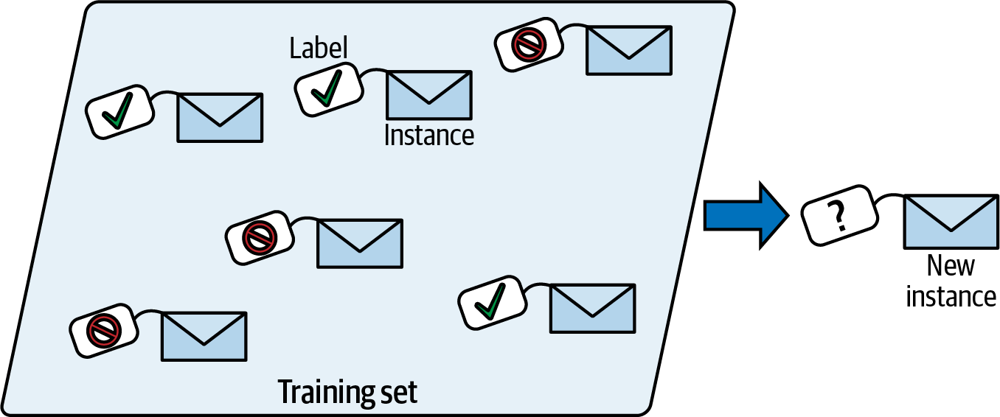
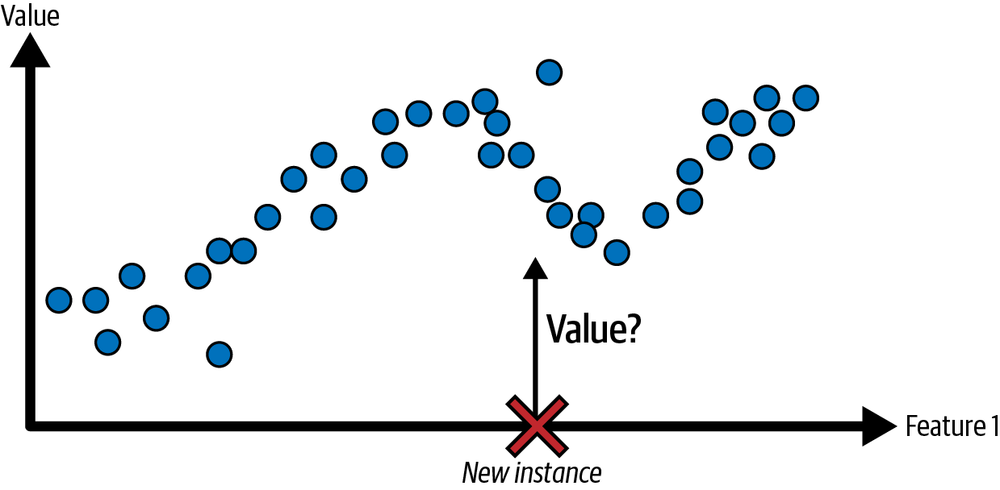

What is Machine Learning?
What is ML?
Machine learning is the science (and art) of programming computers so they can learn from data.
Here is a slightly more general definition:
[Machine learning is the] field of study that gives computers the ability to learn without being explicitly programmed.
- Arthur Samuel, 1959
What is ML?
ML offers a new way to solve problems, answer complex questions, and create new content. ML can predict the weather, estimate travel times, recommend songs, auto-complete sentences, summarize articles, and generate never-seen-before images.
In basic terms, ML is the process of training a piece of software, called a model, to make useful predictions or generate content (like text, images, audio, or video) from data.
What is ML?
For example, suppose we wanted to create an app to predict rainfall. We could use either a traditional approach or an ML approach. Using a traditional approach, we’d create a physics-based representation of the Earth’s atmosphere and surface, computing massive amounts of fluid dynamics equations. This is incredibly difficult.
What is ML?
Using an ML approach, we would give an ML model enormous amounts of weather data until the ML model eventually learned the mathematical relationship between weather patterns that produce differing amounts of rain. We would then give the model the current weather data, and it would predict the amount of rain.
Why use ML?

The traditional approach requires explicitly programming a solution.
Why use ML?

The ML approach learns a solution from data.
Why use ML?

Automatically adapting to change.
Why use ML?

Machine Learning can help humans learn
Video Explanation
Types of ML Systems
ML systems fall into one or more of the following categories based on how they learn to make predictions or generate content:
- Supervised learning
- Unsupervised learning
- Reinforcement learning
- Generative AI
Supervised Learning
Supervised learning models can make predictions after seeing lots of data with the correct answers and then discovering the connections between the elements in the data that produce the correct answers. This is like a student learning new material by studying old exams that contain both questions and answers. Once the student has trained on enough old exams, the student is well prepared to take a new exam. These ML systems are “supervised” in the sense that a human gives the ML system data with the known correct results.
Two of the most common use cases for supervised learning are regression and classification.
Supervised Learning
A labeled training set for spam classification (an example of supervised learning)
Regression
A regression model predicts a numeric value.
A regression problem: predict a value, given an input feature (there are usually multiple input features, and sometimes multiple output values)
Regression
| Scenario | Possible Input Data | Numeric Prediction |
|---|---|---|
| Future ride time | Historical traffic conditions (gathered from smartphones, traffic sensors, ride-hailing and other navigation applications), distance from destination, and weather conditions. | The time in minutes and seconds to arrive at a destination |
Regression
| Scenario | Possible Input Data | Numeric Prediction |
|---|---|---|
| Future house price | Square footage, zip code, number of bedrooms and bathrooms, lot size, mortgage interest rate, property tax rate, construction costs, and number of homes for sale in the area | The price of the home |
Classification
Classification models predict the likelihood that something belongs to a category. Unlike regression models, whose output is a number, classification models output a value that states whether or not something belongs to a particular category. For example, classification models are used to predict if an email is spam or if a photo contains a cat.
Classification
Classification models are divided into two groups: binary classification and multiclass classification. Binary classification models output a value from a class that contains only two values, for example, a model that outputs either rain or no rain. Multiclass classification models output a value from a class that contains more than two values, for example, a model that can output either rain, hail, snow, or sleet.
Supervised Machine Learning
Unsupervised Learning
Unsupervised learning models make predictions by being given data that does not contain any correct answers. An unsupervised learning model’s goal is to identify meaningful patterns among the data. In other words, the model has no hints on how to categorize each piece of data, but instead it must infer its own rules.
A commonly used unsupervised learning model employs a technique called clustering. The model finds data points that demarcate natural groupings.
Unsupervised Learning

Figure 1. An ML model clustering similar data point
Unsupervised Learning

Figure 2. Groups of clusters with natural demarcations
Unsupervised Learning
Clustering differs from classification because the categories aren’t defined by you. For example, an unsupervised model might cluster a weather dataset based on temperature, revealing segmentations that define the seasons. You might then attempt to name those clusters based on your understanding of the dataset.
Unsupervised Learning

Figure 3. An ML model clustering similar weather patterns.
Unsupervised Learning

Figure 4. Clusters of weather patterns labeled as snow, sleet, rain, and no rain.
Reinforcement Learning
Reinforcement learning models make predictions by getting rewards or penalties based on actions performed within an environment. A reinforcement learning system generates a policy that defines the best strategy for getting the most rewards.
Reinforcement learning is used to train robots to perform tasks, like walking around a room, and software programs like AlphaGo to play the game of Go.
Reinforcement Learning

A robot learning to walk through reinforcement learning.
Reinforcement Learning
Generative AI
Generative AI is a class of models that creates content from user input. For example, generative AI can create unique images, music compositions, and jokes; it can summarize articles, explain how to perform a task, or edit a photo.
Generative AI can take a variety of inputs and create a variety of outputs, like text, images, audio, and video. It can also take and create combinations of these. For example, a model can take an image as input and create an image and text as output, or take an image and text as input and create a video as output.
Generative AI
We can discuss generative models by their inputs and outputs, typically written as “type of input”-to-“type of output.” For example, the following is a partial list of some inputs and outputs for generative models:
- Text-to-text
- Text-to-image
- Text-to-video
- Text-to-code
- Text-to-speech
- Image and text-to-image
Text-to-text
| Input | Example Output |
|---|---|
| Who invented the Le Mans race? | The 24 Hours of Le Mans was founded by the Automobile Club de l’Ouest (ACO), a motoring organization founded in 1906. The first race was held on 26 and 27 May 1923 on the Sarthe Circuit, a 13.426-kilometre (8.345-mile) road circuit located near the town of Le Mans in France. |
Text-to-image
| Input | Example Output |
|---|---|
| An alien octopus floats through a portal while reading a newspaper |  |
Text-to-video
| Input | Example Output |
|---|---|
| A photorealistic teddy bear is swimming in the ocean at San Francisco. The teddy bear goes under water. The teddy bear keeps swimming under the water with colorful fishes. A panda bear is swimming under water. |  |
Text-to-code
| Input | Example Output |
|---|---|
| Write a Python loop that loops over a list of numbers and prints the prime numbers. |
Image-to-text
| Input | Example Output |
|---|---|
 |
This is a flamingo. They are found in the Caribbean. |
Generative AI
How does generative AI work? At a high-level, generative models learn patterns in data with the goal to produce new but similar data. Generative models are like the following:
- Comedians who learn to imitate others by observing people’s behaviors and style of speaking
- Artists who learn to paint in a particular style by studying lots of paintings in that style
- Cover bands that learn to sound like a specific music group by listening to lots of music by that group
Generative AI
To produce unique and creative outputs, generative models are initially trained using an unsupervised approach, where the model learns to mimic the data it’s trained on. The model is sometimes trained further using supervised or reinforcement learning on specific data related to tasks the model might be asked to perform, for example, summarize an article or edit a photo.
Generative AI is a quickly evolving technology with new use cases constantly being discovered. For example, generative models are helping businesses refine their ecommerce product images by automatically removing distracting backgrounds or improving the quality of low-resolution images.